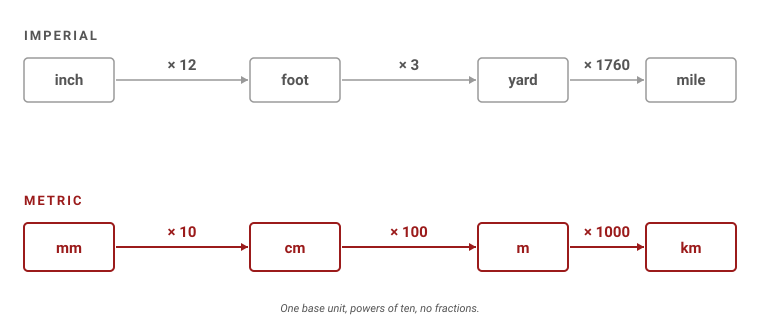
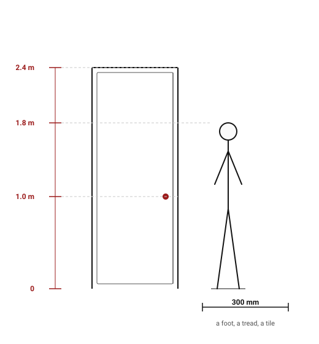
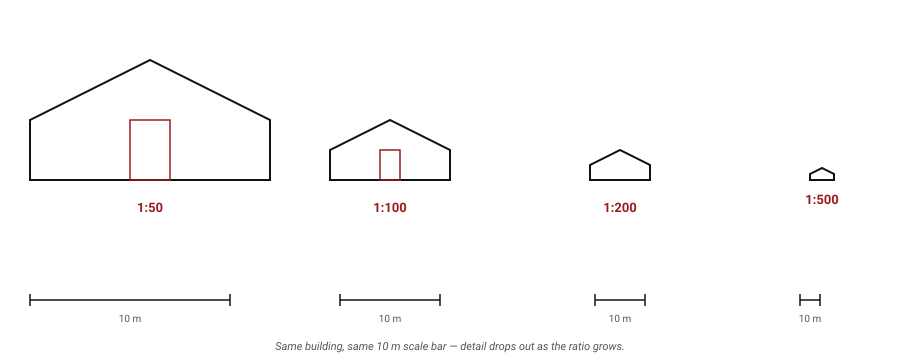
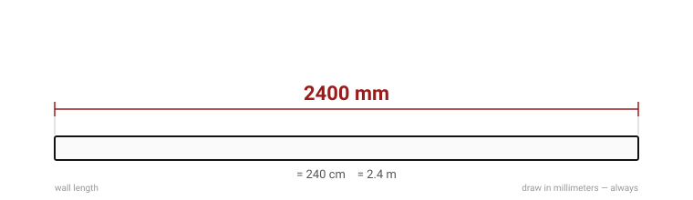
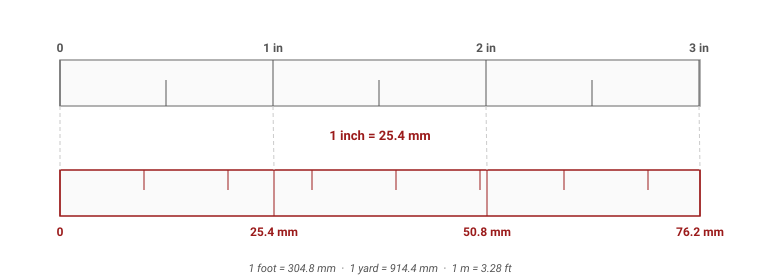
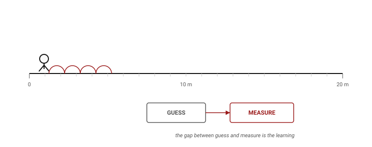

This course operates in a country and a profession that use the International System of Units (SI). Every measurement you take in the field, every dimension you draw, and every model you build will be recorded in metric. This is not an arbitrary constraint. It aligns your work with Italian practice, with European and international landscape architecture, and with the scientific literature on the lagoon you will be reading throughout the semester.
The metric system is a decimal system built on one base unit per quantity and powers of ten. It is simpler than the imperial system you were trained in. There are no fractions, no mixed units, and no hidden ratios. The difficulty is not the system. The difficulty is unlearning the reflex to convert.
You are not learning a new system. You are learning the system the rest of the world uses, and it is easier than the one you are leaving behind.

Build a physical intuition for metric before you build an arithmetic one. These reference points map metric onto the body and the everyday, so that you stop converting and start feeling.

Metric scales are clean ratios, not feet-per-inch. An imperial scale encodes a hidden division: 1/4 inch equals 1 foot is really 1:48. Metric simply states the ratio. The table below maps the imperial scales you know to their metric equivalents.
| Imperial scale | True ratio | Closest metric |
|---|---|---|
| 1/4" = 1'-0" | 1:48 | 1:50 |
| 1/8" = 1'-0" | 1:96 | 1:100 |
| 1/16" = 1'-0" | 1:192 | 1:200 |
| 1" = 10' | 1:120 | 1:100 / 1:200 |
| 1" = 20' | 1:240 | 1:200 / 1:250 |
| 1" = 30' | 1:360 | 1:500 |
| 1" = 50' | 1:600 | 1:500 / 1:1000 |

Memorize this canonical ladder of scales and their uses.
| Scale | Use |
|---|---|
| 1:1, 1:2, 1:5 | Details and construction |
| 1:10, 1:20 | Furniture and joinery |
| 1:50 | Room-scale plans and sections |
| 1:100 | Building plans |
| 1:200 | Building and immediate context |
| 1:500 | Site and master plans |
| 1:1000, 1:2000 | Urban and landscape territory |
Draw and model in millimeters. Always. Not centimeters, not meters. A wall is 2400, not 2.4 and not 240. Worldwide architectural practice works in millimeters because it removes the decimal point entirely, and the field tolerance of one millimeter maps to the smallest mark you can draw. Pick millimeters as the studio standard and hold it everywhere: drawings, models, laser cutting, and 3D prints.

If you need a security blanket, memorize exactly these six numbers and use nothing else. Conversion is a bridge to cross during the transition, not a permanent mode of working.
| Metric | Imperial |
|---|---|
| 25.4 mm | 1 inch |
| 304.8 mm | 1 foot |
| 914.4 mm | 1 yard |
| 1 m | 3.28 feet |
| 1 km | 0.62 miles |
| 1 hectare | 10,000 m² (about 2.47 acres) |

The fastest path to metric fluency is not conversion but calibration. In the field, before you measure anything, write down a guess in metric, then measure. The gap between guess and actual is where the learning happens.
Pace calibration. Walk a known 20 meter line and count your steps. Derive your personal pace length in meters. From then on, pacing is metric fieldwork.
Guess-and-check stations. Guess the width of a canal, the height of a wall, or the span of a bridge in meters, then measure with a laser or a tape. Log the error in your field journal.
Metric-only tools. Use scale rulers and tape measures marked in metric only. Dual-scale tools keep you anchored to the old system.
No imperial at pin-ups. If a number is spoken in feet, someone translates it aloud to metric on the spot. The unit of conversation in this course is the millimeter and the meter.
